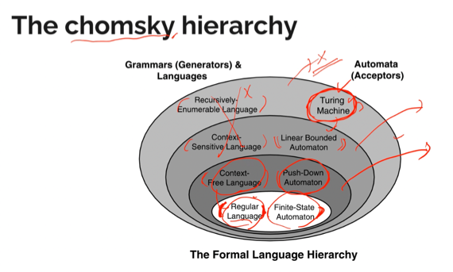
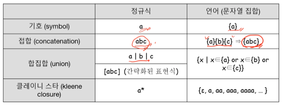

충남대학교 컴퓨터공학과 이성호 교수님의 "프로그래밍 언어 개론" 강의를 필기한 내용입니다.
다소 잘못된 내용과 구어적 표현 이 포함되어 있을 수 있습니다.
프로그래밍 언어란
- 프로그래밍 언어는 <정해진 문법>을 따르는 <알파벳 문자열>이다
구문분석기(syntax analyzer 혹은 parser)
- G = 문법 = 규칙
- 함수 L()를 인자로 받은 문법으로 만들 수 있는 모든 문자열들의 집합을 반환하는 함수라고 가정해보자 - 그럼 L(G) 는 해당 문법에 부합하는 모든 문자열의 집합이다
- 임의의 문자열 s가 집합 L(G)의 원소인지를 판단하는 것이 syntax analyser 혹은 parser가 하는 일이다
Chomsky hierarchy

- 여기 보면 왼쪽에 있는 놈이 L(G)에 대응하고 오른쪽에 있는 놈이 Parser에 대응한다
- automaton(복수형 - automata)이라는 것은 parser랑 비슷하게 어떤 문자열이 어떤 문법을 따르고 있는지 판단해주는 가상(상상에만 존재하는) 기계(머신)이다
- 즉, 어떤 문자열이 [왼쪽]에 속하는 지를 [오른쪽]놈이 판단한다 이말이다
- 그리고 원이 클수록 더 많은 표현을 할 수 있게 된다
- 일반적인 프로그래밍 언어는 Context-Free Language로 정의된다
- 그리고 일부의 프로그래밍 언어가 Context-Sensitive Language로 정의되고
- Recursively-Enumerable Language는 존재하지 않는다
- 무한대의 저장공간을 가지고 있는 이상적인 parser가 Turung Machine이기 때문
기본 정의
Alphabet
- 여기에서 alphabet이란 <기호>들의 <유한집합>(finite set)이다
- 굳이 영어의 알파벳이 아니더라도, 몇개의 기호들을 모아 집합으로 만들면 그게 알파벳이 된다 이거다
- 알파벳은 Σ 시그마로 표현한다
String - 문자열
- 문자열은 알파벳 내 <기호>들의 <유한 순서>이다
- 즉, 기호 몇개를 묶어 순서를 가지게 나열하면 그게 문자열이 된다는 것이다
- 길이가 유한하다는 거지 문자열 집합의 크기가 유한하다는게 아니다 - 문자열 집합의 크기는 무한
- 알파벳으로 만들 수 있는 모든 문자열의 집합을 Σ * - 시그마 별로 나타낸다
- 빈 문자열은 ε로 나타낸다
- 문자열만을 언어로 정의하면 유효하지 않은 놈들까지 포함되게 된다
- 이메일 언어를 정의하기 위해 대, 소문자와 @를 알파벳으로 정의하고 이 알파벳으로 만든 문자열 집합을 이메일 언어로 정의해버리면 @@@도 이메일 언어에 포함되게 됨
- 언어의 정의는 좀 더 복잡하게 할 필요가 있더라
문자열 연산
- 접합 : {xy | x → Σ * 1, y → Σ * 2} - 문자열 두개 같다붙인거
- 합집합 : {x | x → Σ * 1 OR x → Σ * 2} - 문자열 두개 OR
- 클레이니 스타(kleene closure) : {x | x → ε OR x → Σ OR x → ΣΣ … } - 결국에는 (Σ *) * 는 Σ * 와 같게 된다 - 정규식에서의 별표
문자열 연산을 이용하여 “정밀하게” 언어를 정의하기
- “정밀하게”정의한다는 것은 “올바른” 문자열만을 언어에 포함시키겠다는 의미이다
- 문자열 연산을 활용하여 우리가 원하는 언어만 언어에 포함시키도록 해야 한다
정규식
- 정규식 배웠제?
- 정규식으로 표현할 수 있는 언어를 정규 언어라고 한다
- 저기 chomsky 다이어그램에서 regular language라고 돼있는 애들이 이거임
- 표현력이 아주 제한적이다
- 생각해보면 정규식은 {ab, aabb, aaabbb, aaaabbbb … }같은 애들을 검거하지 못한다
- 따라서 거의 모든 프로그래밍 언어는 정규언어가 아니지만 Parser에서 정규식을 활용해 입력받은 문자열이 프로그래밍 언어의 syntax에 맞는지 확인한다
- 정규식을 문자열 집합으로 표현해보면 이래된다

- 정규식에서의 연산자 우선순위 → () > 클레이니스타 > 접합 > 합집합
s가 L에 속한다
- 이 말인 즉슨 문자열 s가 언어집합 L의 원소이다 라는 말이다
- 하지만 언어집합L은 무한집합이기 때문에 L의 모든 원소를 나열한 다음 문자열 s가 속하는지를 할 수는 없다
Finite State Automata
- 오토마타는 추상기계, 그니까 어떠한 작업을 하는 기계를 머릿속에 상상하면 그놈을 automata라고 부른다
- 그니까 FSA(Finite State Automata) 혹은 FA(Finite Automata) 는 유한한 동작 단계를 가지는 머릿속에 존재하는 기계하는 뜻이다
- 상태를 기계가 작동하며 거치게 되는 단계들이라 생각하면 된다
- FSA는 다음과 같은 요소들로 구성되어 있다
- Q : 상태들의 집합이다. 즉, 기계가 작동하며 거치게 되는 모든 단계들을 모아놓은 것이다
- Σ : 알파벳. 가호들을 모아놓은 집합
- q : 시작 상태. 기계가 작동하기 전 초기의 단계라고 생각하면 될 것이다. 이것도 상태이므로 Q의 한 원소이다
- F : 종료 상태의 집합. 종료될때는 뭐 정상적으로 종료되었는지 아니면 뭐 ㅈ됐는지 등등 다양한 상태를 가질 수 있으므로 집합으로 표현된다. 이것도 마찬가지로 상채이므로 Q의 부분집합이 된다
- δ : 전이 함수 집합. 전이 함수라는 것은 어떤 경우에 다음 상태(단계)로 넘어가고 어떤 경우에 현재 상태(단계)에 머물러 있어야 되는지 등의 동작을 말한다
- 이제 이 기계를 작동시켜 보자.
- 어떤 문자열이 들어오고 이것이 언어에 속하는지를 판단하기 위한 FSA를 하나 만들었다고 해보자.
- 일단 q의 상태로 시작할 것이다.
- 그 이후 문자열의 첫번째 문자와 q상태를 전이함수에 넣어 상태를 하나 얻어낸다.
- 그리고 또 그 다음 문자와 얻어낸 상태를 전이함수에 넣어 또 상태 하나를 얻어낸다.
- 이렇게 문자열의 모든 문자를 훑고 나면 내 손에 최종 결과로 나온 상태가 하나 쥐어져 있을 것이다.
- 이것이 종료상태F에 포함된다면 나는 이 문자열이 이 언어에 해당한다고 말할 수 있을 것이고, 그렇지 않다면 포함되지 않는다고 말할 수 있을 것이다.
- 또한 작동하는 와중에 전이함수에 정의되지 않은 동작을 해야돼서 상태가 도출되지 않아도 이 언어에 포함되지 않는다고 말할 수 있다.
Lexical Analyzer (Lexer), Syntax Analyzer (Parser)
- 코드 한줄을 이 lexical analyzer(혹은 lever)를 통해 토큰으로 바꾸게 된다
- lexical analyzer(혹은 lexer) 는 정규식을 이용해 코드를 토큰들로 쪼개는*프로그램이다
- 토큰은 뭐 OCaml에서의 let, fun같은 <키워드>나 =, +, (, )같은 <기호>(어휘항목이라고도 한다)들을 나타내는 하나의 자료형이다
- 이 Lexer는 보통 Parser와 같이 동작한다
- Parser가 토큰 하나를 요청하면 Lexer가 제네레이터마냥 토큰을 하나 던져주고 이런식으로 동작한다
- 정규식에서의 ‘소비’개념때문에 제네레이터처럼 작동할 수 있는 것
- 검거 실패했을 경우 syntax error가 발생한다
- lexer가 검거에 실패하면 parser가 에러를 판단하고 내보내기 때문